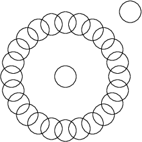
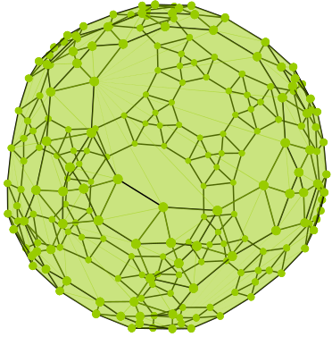

"Algebraic and Geometric Computations in OSCAR" with Joswig M., Meroni C., Schleis V. and Schmitt J.
SIAM News (2023)
SIAM News (2023)
"Discrete geometry of Cox rings of blow ups of P3" with Panizzut M.
Submitted
Submitted
"The enumerative geometry of cubic hypersurfaces: point and line conditions" with Danelon A., Fevola C. and Kretschmer A.
Collectanea Mathematica (2023)
Collectanea Mathematica (2023)
"Algebraic Degrees of 3-Dimensional Polytopes" with Joswig M. and Panizzut M.
Vietnam Journal of Mathematics (Special issue for Sturmfels on the occasion of his 60th birthday, 2022)
Vietnam Journal of Mathematics (Special issue for Sturmfels on the occasion of his 60th birthday, 2022)
"Moduli spaces of geometric graphs" with Lerario A. and Newman A.
To appear in Algebraic & Geometric Topology (2023)
To appear in Algebraic & Geometric Topology (2023)
"Real lines on random cubic surfaces" with Meroni C. and Ait El Manssour R.
Arnold Mathematical Journal (2021)
Arnold Mathematical Journal (2021)
Geometric graph

This was the topic of my master thesis
Constrained realization spaces

If you love nice pictures, look this up
Counting cubic hypersurfaces
There are 213642327616 cubic surfaces tangent to 19 generic given lines